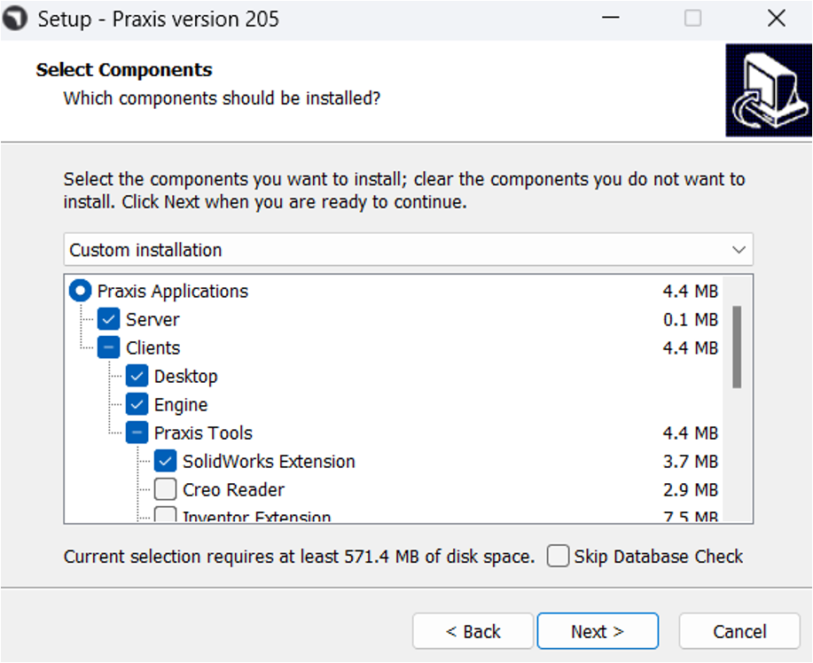
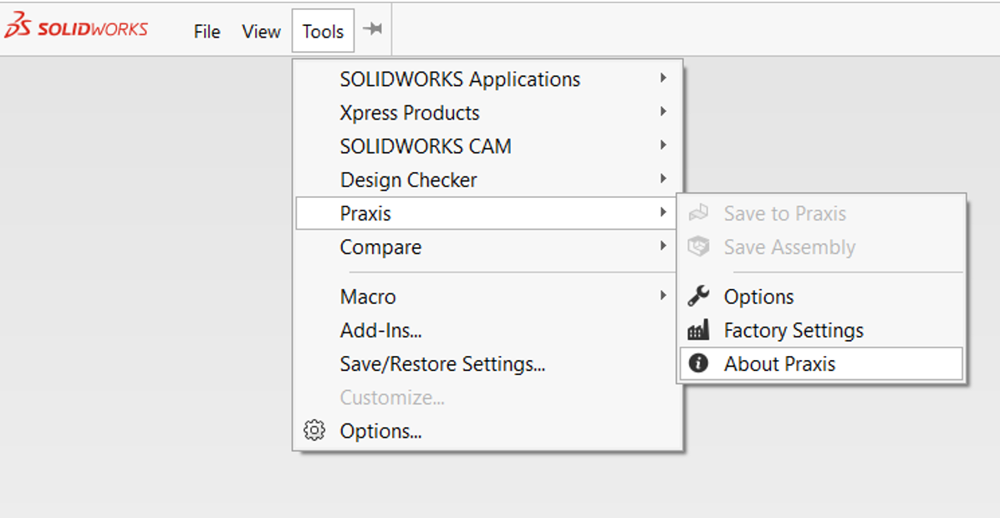

Inštalácia
|
Povinné požiadavky
Prihlásenie do TruSmartCAM desktop je povinné pri prvom spustení SolidWorks. Uistite sa, že TruSmartCAM monitor je spustený v oblasti oznámení systému Windows. Ak TruSmartCAM desktop nie je otvorený, overte, že služba TruSmartCAM server je spustená, aby mohol SolidWorks Add-in fungovať. Ak sú oba neaktívne, SolidWorks zobrazí pri spustení chybové hlásenie. 
|
Postupujte podľa týchto krokov na inštaláciu a nastavenie TruSmartCAM Add-in pre SolidWorks:
-
Spustite TruSmartCAM Setup a na stránke výberu komponentov povoľte SolidWorks Extension. (Preskočte možnosť Server, ak je SolidWorks nainštalovaný na TruSmartCAM klientovi.)

-
Dokončite inštaláciu, potom spustite TruSmartCAM desktop a prihláste sa platnými prihlasovacími údajmi používateľa.

-
Spustite SolidWorks.

-
V SolidWorks prejdite na Tools → TruSmartCAM → About TruSmartCAM, aby ste overili verziu a podrobnosti add-inu.

-
Ak chcete povoliť alebo zakázať add-in pri spustení, prejdite na Tools → Add-ins a vyhľadajte TruSmartCAM v Other Add-ins.